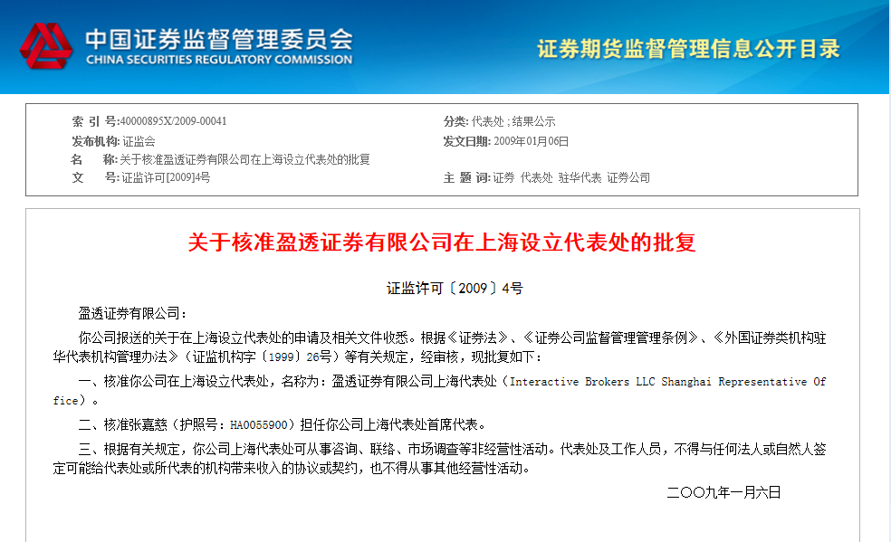

TRUBUZZ INC
TRUBUZZ INC.(CRD# 282693 / SEC# 801-107237) 是美国证监会注册的投资顾问, 提供股票投资顾问服务。所有证券和投资服务通过 INTERACTIVE BROKERS LLC（盈透证券有限公司）提供, INTERACTIVE BROKERS LLC是NYSE - FINRA - SIPC的成员，受美国证监会（SEC）和商品期货交易委员会（the Commodity Futures Trading Commission）的监管。
盈透证券有限公司
根据巴伦周刊（Barron's）2016年3月21日的最佳互联网券商评比“网络投资者的最大顾虑？移动安全”，盈透证券在成本类目中连续第六年评分最高，荣获4.5星评级。
总部地址: One Pickwick Plaza, Greenwich, CT 06830 USA
公司网址： www.interactivebrokers.com
查询认证方式
有关TRUBUZZ INC.的资质报告可通过 www.adviserinfo.sec.gov/获取。
有关盈透证券（Interactive Brokers）和其投资专业人士的美国金融业监管局（FINRA）的BrokerCheck（经纪商查询）报告可通过 www.finra.org/brokercheck获取。
上海设立代表处的批复证明
